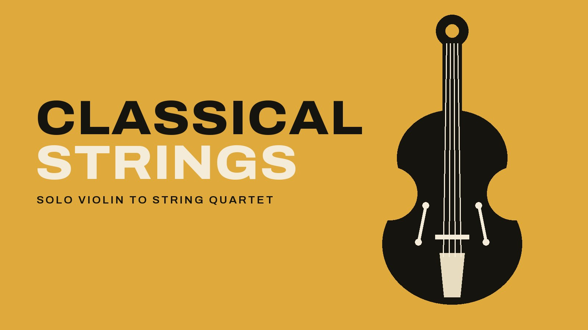

MUSIC
What is a string quartet?
The four instruments and what each one plays, how a trio, a duo or a single violinist compares, what strings play at a wedding, and which size to book for a ceremony, a cocktail hour or a gala.

- A string quartet is two violins, a viola and a cello. The first violin usually plays the tune, the cello plays the bass line, and the second violin and the viola fill in the harmony between them.
- The viola is the instrument between the violin and the cello. It's a little larger than a violin, held under the chin the same way, and tuned lower.
- A string trio plays the music in three parts, and a duo of violin and cello keeps just the tune and the bass line. A solo violinist plays the tune on its own.
- At a wedding, strings play classical processionals, hymns and arrangements of pop songs. One violinist suits a proposal or a small ceremony, and a quartet suits a church, a ballroom or a gala.
A string quartet is four musicians playing two violins, a viola and a cello. All three kinds of instrument belong to the violin family. They’re built the same way, with four strings each and a bow to play them, and the bigger the instrument, the lower it sounds. The name also covers the music written for the group, so a piece called String Quartet No. 1 is written for exactly those four players.
What instruments are in a string quartet? #
The four divide the music into parts the way a choir does, with the first violin as the soprano, the second violin as the alto, the viola as the tenor and the cello as the bass.
- First violin. It takes the highest part, and most of the time that’s the melody. The first violinist usually leads the group as well, with the nod that starts each piece.
- Second violin. It’s the same instrument as the first, and it plays a harmony part just under the melody. In a lot of pieces the two violins pass the tune back and forth.
- Viola. This is the instrument between the violin and the cello. It’s a little larger than a violin and it’s held the same way, under the chin, but it’s tuned lower, with a low C string where the violin has its high E. That gives it a darker sound, and in a quartet it fills in the notes between the violins above it and the cello below.
- Cello. It’s the largest of the four, and the cellist sits with the instrument standing on the floor between the knees. It’s tuned an octave below the viola and plays the bass line, which is the lowest part in the group. The cello gets tunes of its own as well, and The Swan is a Saint-Saëns melody written for cello.
The clip below is a string quartet playing the first two movements of Beethoven’s String Quartet Op. 18 No. 6, from the first set of six quartets he published.
String trio or string quartet: what's the difference? #
A string trio is three players, so the music is arranged in three parts instead of four. In concert music the classic string trio is violin, viola and cello. The trios we book are either that or two violins and cello. Both keep the melody on top and the bass line underneath, and the middle of the sound is lighter and more open.
In a duo of violin and cello, the violin has the tune and the cello has the bass line, and together they outline the chords. That’s enough for Canon in D to sound the way people remember it, because the cello keeps up the repeating bass line the whole piece is built on.
One violinist plays the melody on its own, and can bow two strings at once to put a note of harmony under it. Bach wrote a set of six sonatas and partitas for violin alone, with the harmony written into the one violin part.
A string quintet adds a fifth player to the quartet, usually a second viola or a second cello.
What kind of music does a string quartet play? #
The quartet has a long repertoire of its own. Haydn wrote dozens of string quartets in the second half of the 1700s, and Mozart, Beethoven and Schubert all wrote for the same four instruments. Mozart’s Eine Kleine Nachtmusik was written for strings too, and a quartet plays it at weddings and galas.
Much of the classical music at a wedding or a gala started out as something else. Debussy wrote Clair de Lune for piano, and Schubert’s Ave Maria began as a song for voice and piano. A quartet uses arrangements of both, written for its four parts.
Hymnals print traditional hymns such as Amazing Grace and How Great Thou Art in four-part harmony, the same four voices as a quartet, so each instrument takes one voice. Newer worship songs like Goodness of God and Oceans are arranged for strings the way pop songs are.
In a pop arrangement the singer’s melody usually goes to the first violin, and the other three play the chords and the bass line. The song list our string players use goes from Can’t Help Falling in Love and A Thousand Years to Mr. Brightside and Smells Like Teen Spirit. Viva La Vida is on it too, and Coldplay recorded that one with a string section in the first place.
Jazz and Motown are arranged the same way, so Duke Ellington’s It Don’t Mean a Thing and Stevie Wonder’s Signed, Sealed, Delivered are on the list with Bach. The film themes on it include Married Life from Up and Concerning Hobbits from The Lord of the Rings.
What does a string quartet play at a wedding? #
Strings can play a whole ceremony, from the prelude as guests arrive through the processional to the recessional.
The prelude is the gentler music, such as Bach’s Air on the G String or Jesu, Joy of Man’s Desiring. Elgar’s Salut d’Amour belongs here too, since he wrote it as an engagement present for the woman he married.
For the walk down the aisle, the classical choices are Pachelbel’s Canon in D, Wagner’s Bridal Chorus (better known as Here Comes the Bride), Jeremiah Clarke’s Trumpet Voluntary and Handel’s Arrival of the Queen of Sheba. If you want a song of your own for the walk, the list has string arrangements of A Thousand Years, Can’t Help Falling in Love and Turning Page. A violinist watches the aisle, so the processional lasts exactly as long as the walk.
The traditional recessional is Mendelssohn’s Wedding March, and for something brighter there’s the Beatles, with Here Comes the Sun or All You Need Is Love. If the song you want is missing from the list, it can be arranged for whichever size you book.
Solo violin, duo, trio or quartet: which one to book #
- One violinist for a proposal, where one song is the whole booking, for a small ceremony, or for an hour under a dinner for twenty.
- A duo of violin and cello for the ceremony and the cocktail hour together. It’s the size we book most often when the same musicians play both.
- A trio for a cocktail hour on a terrace, a client dinner for twenty to sixty, or a long dinner at a volume guests can talk over.
- A string quartet for a church or a ballroom, where one instrument would be lost in the space, and for a gala’s reception as the doors open.
We book classical strings in all four sizes across Denver, the Front Range and the mountain towns, and the string quartet page has the whole song list and footage of one violin and of the quartet. How strings fit the rest of a wedding day is on the wedding ceremony page and the wedding cocktail hour page. The galas and awards page shows where a quartet plays in a gala evening, beside the dinner music and the dance floor. What a classical duo or trio costs for a ceremony or a cocktail hour in the Denver market is in the live music cost guide.